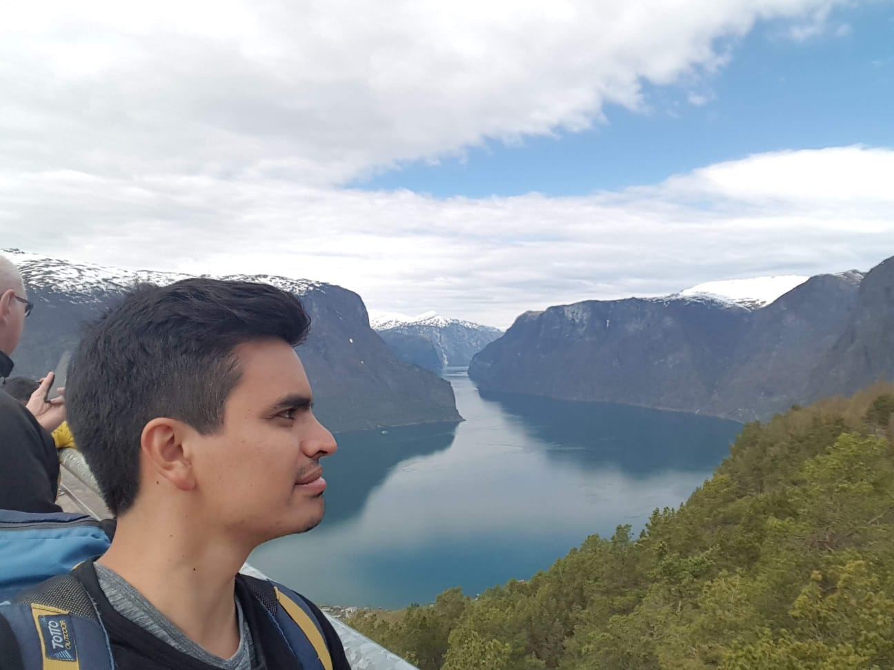

Intro
I am a software developer with a primary focus on crafting modern web applications. My passion lies in leveraging technology to create a more efficient future through clean code and thoughtful design.
By the way, check out my awesome work.
Software Engineer
I am a software developer with a primary focus on crafting modern web applications. My passion lies in leveraging technology to create a more efficient future through clean code and thoughtful design.
By the way, check out my awesome work.
With roots in robotics and automation engineering, I bring a unique perspective to software development.
This foundation in automation naturally evolved into a passion for backend web development. I now focus on architecting efficient data workflows, ensuring that complex information management systems are stable, scalable and easy to maintain.
To know more, you can checkout my likedin profile or take a look of what I am about.

Born in Bogotá (Colombia), since very little I was curious about how things work.
Successfully completed the EU4M master in Mechatronics program, at the Hochschule Karlsruhe and the ENSMM.
I am proud to have become a German citizen, a milestone that reflects my deep commitment to the country I now call home. Beyond my professional work, I’ve found a true sense of belonging here and take great pride in being an active, contributing member of both German and European society
For any questions about me, don't hesitate to contact me.